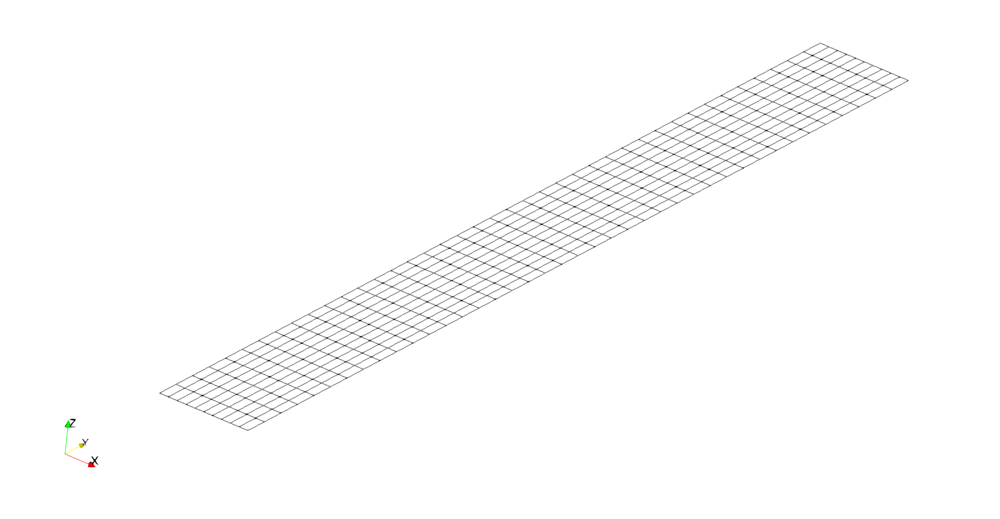
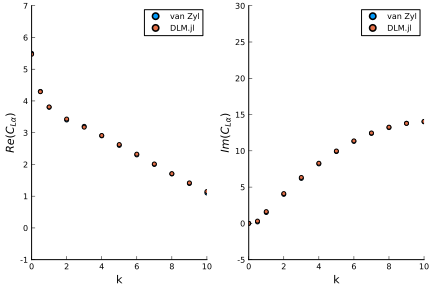
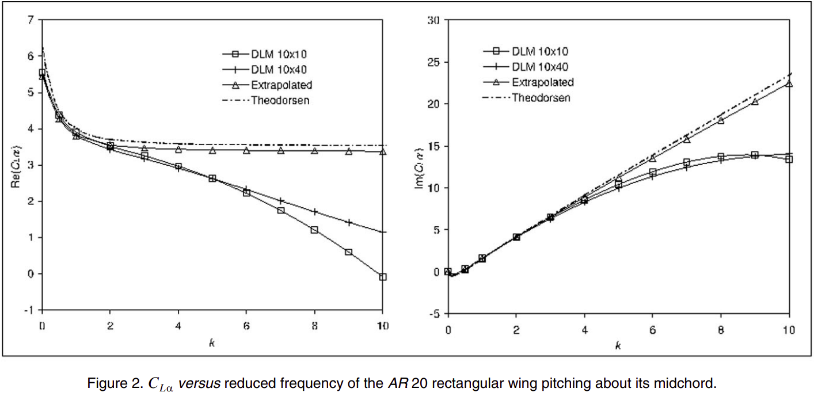

Example
This example shows how to use DLM.jl to solve for the lift coefficient slope of a rectangular wing with an aspect ratio of 20 pitching about its midchord.
using DLMDefining the geometry
Surfaces are defined in DLM.jl by creating rectangular grids with shape (3, ni, nj). The first dimension is used for the x, y, and z coordinates, respectively. The second dimension is used for the grid index in the chordwise direction. The third dimension is used for the grid index in the spanwise direction.
Here we will create the AR 20 wing with 10 panels in the chordwise direction and 40 panels in the spanwise direction.
AR = 20
nchord = 10
nspan = 40
b = 10
semispan = b/2
chord = b/AR
symmetric = true
xyz = zeros(3, nchord+1, nspan+1)
for i = 1:nchord+1
for j = 1:nspan+1
xyz[1, i, j] = chord*(i-1)/nchord
xyz[2, i, j] = semispan*(j-1)/nspan
end
endUsing this convention, the geometry can be easily visualized using WriteVTK.
using WriteVTK
# add extra dimension for WriteVTK
xyz_vtk = reshape(xyz, size(xyz)..., 1)
# initialize vtk file
vtkfile = vtk_grid("example", xyz_vtk)
# save the vtk file
vtk_save(vtkfile)
Setting the flow conditions
For this example we will use the following flow properties:
- Velocity: 10 m/s
- Mach Number: 0 (Incompressible)
- Reduced Frequency (based on chord): [0, 0.5, 1, 2, 3, 4, 5, 6, 7, 8, 9, 10]
U = 10
M = 0.0
kr = [0, 0.5, 1, 2, 3, 4, 5, 6, 7, 8, 9, 10]Solving for the lift slope
To solve for the lift slope we perform the following steps:
- Construct the AIC matrix
- Find the downwash on each panel's control point
- Solve the system to find the pressure coefficients
- Integrate to find the lift coefficient
AIC = zeros(Complex{Float64}, nchord, nspan, nchord, nspan)
w = zeros(Complex{Float64}, nchord, nspan)
CL = zeros(Complex{Float64}, length(kr))
for k = 1:length(kr)
# compute circular frequency
ω = U*kr[k]/(chord)
# calculate AIC
influence_matrix!(AIC, ω, U, M, xyz, true)
# calculate downwash
for i = 1:nchord
for j = 1:nspan
# get control point x-location
x1 = (1/2)*xyz[1,i,j] + (1/2)*xyz[1,i,j+1]
x2 = (1/2)*xyz[1,i+1,j] + (1/2)*xyz[1,i+1,j+1]
x = (1/4)*x1 + (3/4)*x2
# compute downwash
# -1/U*(dh/dt + U*dh/dx), where h = (x - 0.5c)*e^{j*omega*t}
w[i,j] = -1.0 - 1im*(ω/U)*(x-0.5*chord)
end
end
# solve the system to get the pressure coefficients
Cp = pressure_coefficients(AIC, w)
# integrate to find the lift slope
CL[k] = sum(Cp)/(nspan*nchord)
end
println(CL)Complex{Float64}[5.469951193063653 + 0.0im, 4.290939951467311 + 0.31664731894853076im, 3.811308954684494 + 1.623745292882406im, 3.4297214864062022 + 4.106557503770892im, 3.1738248703979464 + 6.327687027471003im, 2.9114292317362986 + 8.29013753929997im, 2.6262943633142966 + 9.975798091612491im, 2.323877065478717 + 11.36817650214414im, 2.0147505209731054 + 12.461220208818867im, 1.7097578786561909 + 13.260874668344076im, 1.4181499074018107 + 13.78370390825787im, 1.1468807841505861 + 14.054325856595636im]Examine the Results
This exact analysis was performed by van Zyl in "Robustness of the subsonic doublet lattice method". Here's a comparison of our results to van Zyl's results:

As you can see, the results match exactly. This is actually not surprising, since the doublet lattice method implementation in DLM.jl is based on the same theory as the doublet lattice method used by van Zyl.
Evaluating the Accuracy of the Results
Even though our results matched those of van Zyl, that doesn't mean that they are accurate. Here we show an excerpt from van Zyl's paper which shows just how accurate our analysis is:

The extrapolated solution shown in the figure is effectively the grid-converged solution, which is pretty close to the analytical solution for an infinite aspect-ratio wing. The doublet lattice results for the 10x10 and 10x40 grids, however, fail to be accurate past a reduced frequency of 2 due to the coarseness of the grid in the chordwise direction.
While doing a grid-independent study is the only sure way of knowing whether your discretization has converged to the correct pressure distribution, previous studies have suggested specified numbers of panels per wavelength in order to resolve the pressure distribution.
Rodden, Taylor, and McIntosh suggested that 50 panels per wavelength may be sufficient to resolve the pressure distribution, with an absolute minimum number of panels of 4.
# use standard definition of reduced frequency based on semi-chord
kr = [0, 1, 2, 4, 6, 8, 10, 12, 14, 16, 18, 20]
# minimum number of chordwise panels to resolve pressure distribution
nchord = max.(4, ceil.(Int, 50 .* kr./pi))
println("Number of chordwise panels: ", nchord)
# minimum number of spanwise panels for parabolic kernel (maximum panel aspect ratio of 3)
nspan_parabolic = ceil.(Int, nchord*(AR/2)*1/3)
println("Minimum number of spanwise panels for parabolic kernel: ", nspan_parabolic)
# minimum number of spanwise panels for quartic kernel (maximum panel aspect ratio of 6-10)
nspan_quartic = ceil.(Int, nchord*(AR/2)*1/10)
println("Minimum number of spanwise panels for quartic kernel: ", nspan_quartic)Number of chordwise panels: [4, 16, 32, 64, 96, 128, 160, 191, 223, 255, 287, 319]
Minimum number of spanwise panels for parabolic kernel: [14, 54, 107, 214, 320, 427, 534, 637, 744, 850, 957, 1064]
Minimum number of spanwise panels for quartic kernel: [4, 16, 32, 64, 96, 128, 160, 191, 223, 255, 287, 319]Others, however, have suggested as few as 12 panels per wavelength is sufficient. Ultimately the appropriate number of panels depends on how accurate the solution need to be.